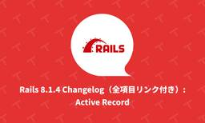
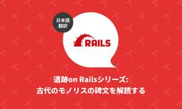

TechRacho
https://techracho.bpsinc.jp
TechRacho（テックラッチョ）は、BPSスタッフがおくるシステム開発＋αのアイデアマガジンです。Ruby on Railsネタ、EPUBの電子書籍ビューワに関連したAndroid/iOS開発ネタが多いです。社内の雰囲気がわかる記事もあるので興味をもってくださる方はぜひご覧ください。
フィード

Rails 8.1.4 Changelog（全項目リンク付き）: Action View、Railties 1
1
TechRacho
概要 Rails 8.1.4と7.2.4がリリースされました Rails 8.1.4のChangelogが、マイナーなリリースとしてはかなり長大なので別記事としました。 （Action MailboxとAction TextのChangelogはエントリなし） 🔗 Action View（7件） 🔗 Fix non-ASCII strict locals defaults in ASCII-only templates by carlosdanielpohlod · Pull Request #58854 · rails/rails 厳密なlocals:マジックコメントのデフォルト値に非ASCII文字が含まれてい […]The post Rails 8.1.4 Changelog（全項目リンク付き）: Action View、Railties first appeared on TechRacho.
2日前

Rails 8.1.4 Changelog（全項目リンク付き）: Active Support 1
TechRacho
概要 Rails 8.1.4と7.2.4がリリースされました Rails 8.1.4のChangelogが、マイナーなリリースとしてはかなり長大なので別記事としました。 （Action MailboxとAction TextのChangelogはエントリなし） 🔗 Active Support（35件） 🔗 Fix the debug error page for SyntaxErrors with multi-line messages by marcoroth · Pull Request #58727 · rails/rails SyntaxErrorのメッセージが複数行になるとdevelopment環境の […]The post Rails 8.1.4 Changelog（全項目リンク付き）: Active Support first appeared on TechRacho.
3日前

Rails 8.1.4 Changelog（全項目リンク付き）: Active Record 1
TechRacho
概要 Rails 8.1.4と7.2.4がリリースされました Rails 8.1.4のChangelogが、マイナーなリリースとしてはかなり長大なので別記事としました。 （Action MailboxとAction TextのChangelogはエントリなし） なお、Rails 8.1でマージされていた#53281が、このRails 8.1.4で以下の#56842によって取り消されたのは比較的大きな影響です↓。 Sort table columns by name when dumping schema by jduff · Pull Request #53281 · rails/rails Revert: So […]The post Rails 8.1.4 Changelog（全項目リンク付き）: Active Record first appeared on TechRacho.
4日前

遺跡on Railsシリーズ: 古代のモノリスの碑文を解読する（翻訳） 2
TechRacho
概要 元サイトの許諾を得て翻訳・公開いたします。 英語記事: Ozymandias on Rails. The Pedestal Inscription | baweaver 原文公開日: 2026年06月28日 原著者: Brandon Weaver 日本語タイトルは内容に即したものにしました。 遺跡on Railsシリーズ: 古代のモノリスの碑文を解読する（翻訳） 「強者（つわもの）どもよ、我が偉業をとくと見るがよい、そして絶望するがよい」 Percy Bysshe Shelley, "Ozymandias" (1818) 古代の遺跡、レガシー、何とも興味をそそられる言葉ですよね？ さて、そもそもレガシーとは […]The post 遺跡on Railsシリーズ: 古代のモノリスの碑文を解読する（翻訳） first appeared on TechRacho.
5日前

HotCell README: 信頼できない入力の処理を別コンテナに隔離するgem（翻訳）
TechRacho
概要 MITライセンスに基づいて翻訳・公開いたします。 英語記事: hotcell/README.md at master · basecamp/hotcell 原文更新日: 2026年10月01日（879be9a） ライセンス: MIT HotCellは現在開発中につき、v1までは頻繁に変更されることが見込まれます。 表記はHotCellで統一します。 スライド: HotCell — Rails World 2026-09-23 Hot Cell is ready to go if you're on Rails edge. Slides are up at https://t.co/gPpw7GhsY […]The post HotCell README: 信頼できない入力の処理を別コンテナに隔離するgem（翻訳） first appeared on TechRacho.
9日前
Stimulusフレームワークを作って学ぶ（1）: data-controllerの仕組み（翻訳）
TechRacho
概要 元サイトの許諾を得て翻訳・公開いたします。 英語記事: Recreating Stimulus: how data-controller works under the hood | Rails Designer 原文公開日: 2026年07月23日 原著者: Rails Designer -- Railsフロントエンド関連記事に加えて、ViewComponentとTailwind CSSを用いた美しいUIコンポーネントを販売しています 日本語タイトルは内容に即したものにしました。 Stimulusフレームワークを作って学ぶ（1）: data-controllerの仕組み（翻訳） 本記事は2部構成のStim […]The post Stimulusフレームワークを作って学ぶ（1）: data-controllerの仕組み（翻訳） first appeared on TechRacho.
10日前
Railsの鋭い部品シリーズ: ポリモーフィック型は外部キーではない（翻訳）
TechRacho
概要 元サイトの許諾を得て翻訳・公開いたします。 英語記事: Rails: The Sharp Parts. A Polymorphic Type Is Not a Foreign Key | baweaver 原文公開日: 2026年06月25日 原著者: Brandon Weaver 日本語タイトルは内容に即したものにしました。 参考: §4.1 ポリモーフィック関連付け -- Active Record の関連付け - Railsガイド Railsの鋭い部品シリーズ: ポリモーフィック型は外部キーではない（翻訳） シリーズの前回記事では、packの境界を超えることが唯一許されるT::Structについて説明 […]The post Railsの鋭い部品シリーズ: ポリモーフィック型は外部キーではない（翻訳） first appeared on TechRacho.
11日前
Rails 8.1.4と7.2.4がリリースされました
TechRacho
Ruby on Rails 8.1.4と7.2.4がリリースされました。内容はバグ修正です。 なお、Rails 7.2.4はRails 7.2.x系の最後のリリースとなります。また、今後セキュリティ修正が提供されるのはRails 8.0.x系と8.1.x系のみです。 Rails Version 8.1.4 has been released! https://t.co/jXb1gUKKrh — Ruby on Rails (@rails) September 24, 2026 リリース情報: Rails Version 8.1.4 has been released! リリース情報: Rails Ve […]The post Rails 8.1.4と7.2.4がリリースされました first appeared on TechRacho.
13日前
Ruby: Caddy をリバースプロキシにしてRubyアプリを運用する（翻訳）
TechRacho
概要 原著者の許諾を得て翻訳・公開いたします。 英語記事: Binary Solo | Serving Ruby apps with Caddy as a reverse proxy 原文公開日: 2026年07月24日 原著者: Ayush Newatia Ruby: CaddyをリバースプロキシにしてRubyアプリを運用する（翻訳） 今回の記事では、Caddyをリバースプロキシとして使うことでRackアプリを配信する方法について説明します（コードをサーバーへデプロイする方法についてはここでは扱いません）。基本的なHTTPリクエストを処理するRackアプリをサーバー上に作成します。 今回構築するものは、シリーズ […]The post Ruby: Caddy をリバースプロキシにしてRubyアプリを運用する（翻訳） first appeared on TechRacho.
15日前
Rubyのテストを改めて考える: アサーションとマッチャー（翻訳）
TechRacho
概要 原著者の許諾を得て翻訳・公開いたします。 英語記事: Thinking about tests: assertions and matchers 原文公開日: 2026年08月16日 原著者: zverok 日本語タイトルは内容に即したものにしました。 Rubyのテストを改めて考える: アサーションとマッチャー（翻訳） 世の中で未だにテストの書き方にこだわり続ける人たちがいるのはなぜなのか、「マッチャー」という概念はそれとどう関係しているか。 私は、Ruby開発者としてのキャリアの大半に渡って、テストを書くことを心から楽しみつつも、テストの書き方についてあれこれ口を出さずにいられない、いわゆる「面倒くさい人 […]The post Rubyのテストを改めて考える: アサーションとマッチャー（翻訳） first appeared on TechRacho.
16日前